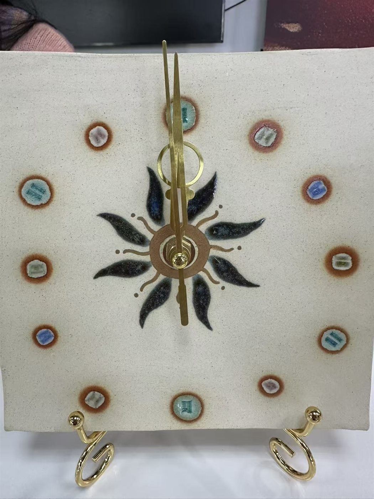
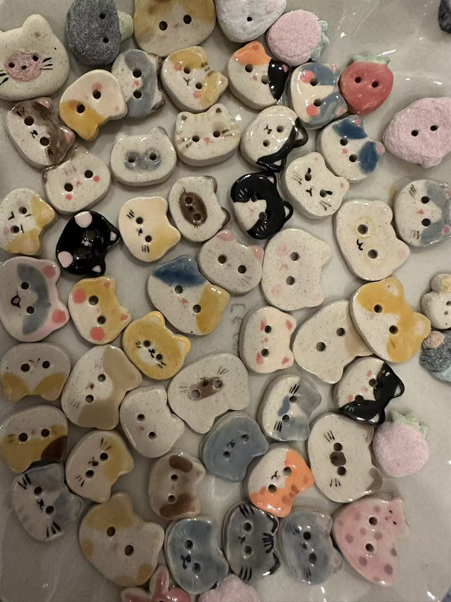
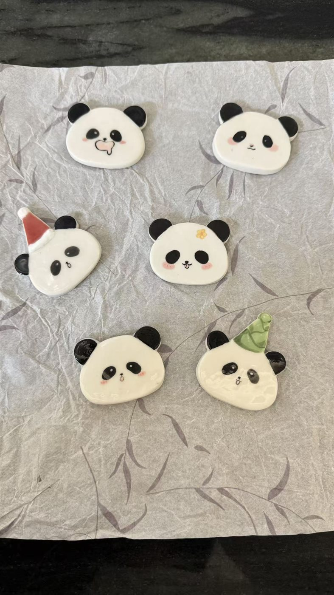
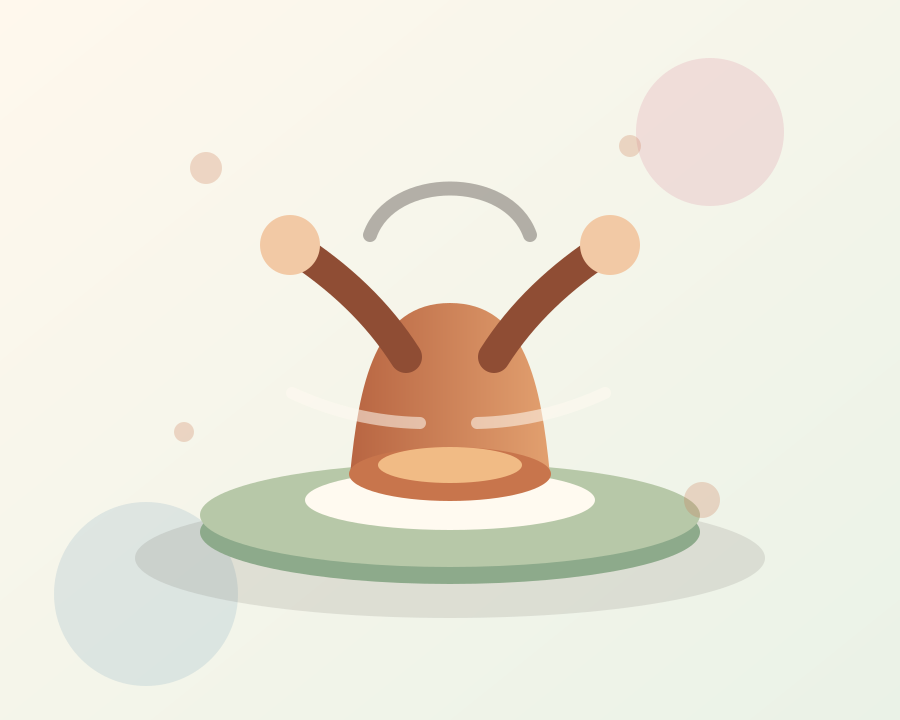
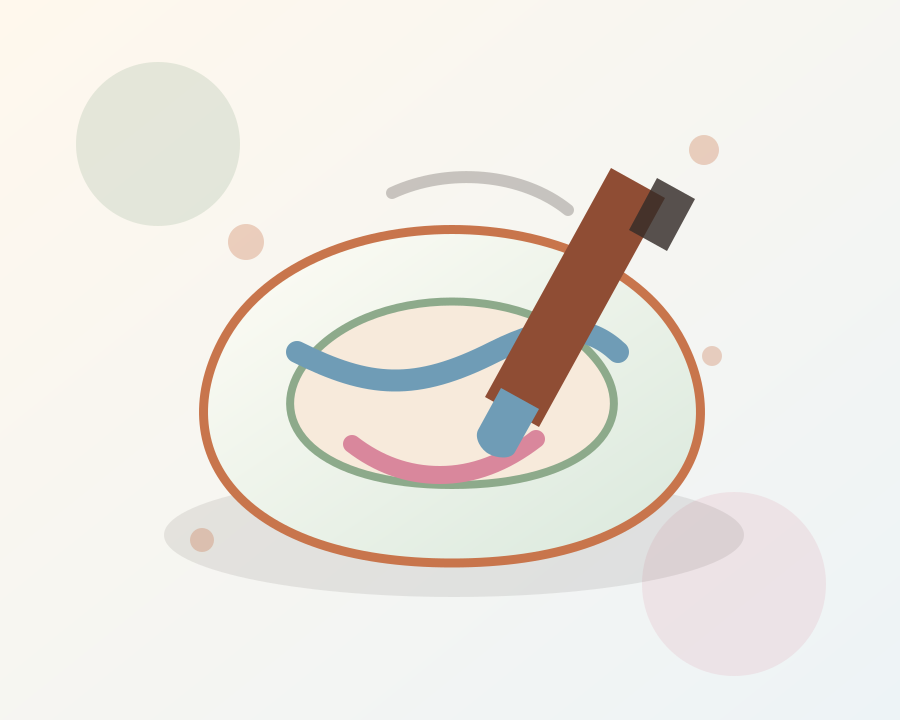

小批量上新 · 每件都有手作痕迹
把陶土、釉色和一点点可爱，做成日常里的小礼物。
陶语小铺收集手工陶瓷钟表、纽扣、冰箱贴、杯子与饰品。每件作品都经过塑形、修整、上釉和烧制，适合自用，也适合送给喜欢独特小物的人。



Shop the table
今日小市集
先挑一个分类，再慢慢看釉色和表情。
From clay to keepsake
手作过程
从泥土成形到釉色稳定，每一步都让小物多一点温度。

01 · 拉坯与塑形
先让泥土有自己的轮廓
杯子、盘子和小挂件会根据用途调整厚度、边缘和手感。

02 · 上釉与烧制
用釉色留下柔软的光
透明釉、彩釉和手绘细节会在窑火里形成自然的流动感。
Ask on WeChat
喜欢哪一件，发图来问就好。
现货、定制、礼物包装和批量需求都可以微信沟通。